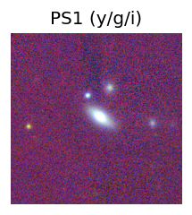
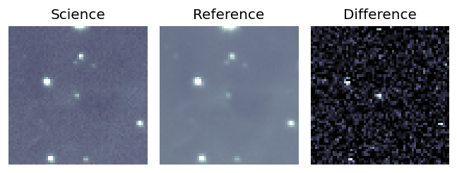
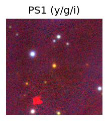
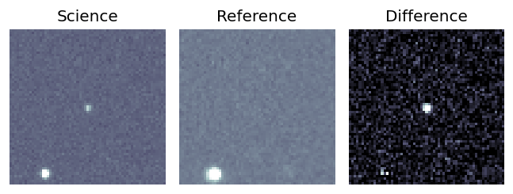
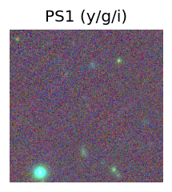
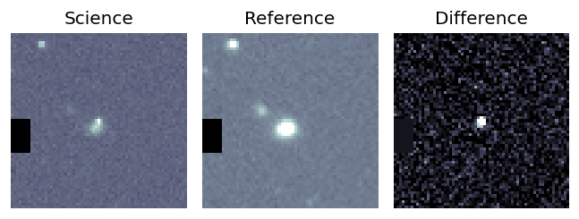
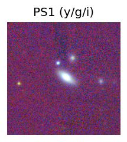
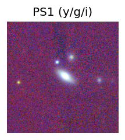

Candidate List 20250830 Previous Day Next Day Section 1: New Sources (age<1d) Cosmological Afterglow
Section 2: Old (1-5d) sources observed last night placeholder
Section 1: New Afterglow/FBOT Cands Last Night (1)
1. ZTF25abnjkui (FBOT?) [Back to Top] [Share] [Trigger Swift] [Fritz ] [Lasair ]RA, Dec: 81.23246, 65.49248 5h24m55.79s, 65d29m32.92sGalactic (l, b): 146.6062, 16.19082 ext(g-r) = 0.221PS1: 1 source in 3 arcsec Closest: d = 0.89 arcsec photoz=0.72+/-0.12 peak abs mag = -23.34
Section 2: Older Sources Observed Last Night (26)
0. ZTF25ablfyoc (FBOT?) [Back to Top] [Share] [Trigger Swift] [Fritz ] [Lasair ]RA, Dec: 46.8818, 10.23032 3h 7m31.63s, 10d13m49.14sGalactic (l, b): 169.02583, -40.16022 ext(g-r) = 0.227PS1: 1 source in 3 arcsec Closest: d = 0.33 arcsec photoz=0.12+/-0.01 peak abs mag = -20.09
1. ZTF25ablihfx (FBOT?) [Back to Top] [Share] [Trigger Swift] [Fritz ] [Lasair ]RA, Dec: 310.31072, -25.35347 20h41m14.57s, -25d-21m-12.48sGalactic (l, b): 19.526, -34.4728 ext(g-r) = 0.069PS1: 1 source in 3 arcsec Closest: d = 0.06 arcsec photoz=0.10+/-0.09 peak abs mag = -21.48
2. ZTF25abliibh (Afterglow?) [Back to Top] [Share] [Trigger Swift] [Fritz ] [Lasair ]RA, Dec: 329.88547, 51.30989 21h59m32.51s, 51d18m35.59sGalactic (l, b): 97.67529, -2.93136 ext(g-r) = 0.664
3. ZTF25ablsyop (FBOT?) [Back to Top] [Share] [Trigger Swift] [Fritz ] [Lasair ]RA, Dec: 41.4068, 39.4236 2h45m37.63s, 39d25m24.97sGalactic (l, b): 145.8157, -18.32071 ext(g-r) = 0.085PS1: 1 source in 3 arcsec Closest: d = 1.94 arcsec photoz=0.40+/-0.06 peak abs mag = -22.06
4. ZTF25abmalbi (Afterglow?FBOT?) [Back to Top] [Share] [Trigger Swift] [Fritz ] [Lasair ]RA, Dec: 29.30969, 35.03725 1h57m14.32s, 35d 2m14.12sGalactic (l, b): 137.87107, -25.91839 ext(g-r) = 0.079 PS1: 1 source in 3 arcsec Closest: d = 0.36 arcsec photoz=0.10+/-0.01 peak abs mag = -19.47 Consistent with synchrotron, g-r>0!
5. ZTF25abmgzst (FBOT?) [Back to Top] [Share] [Trigger Swift] [Fritz ] [Lasair ]RA, Dec: 236.81442, 34.0226 15h47m15.46s, 34d 1m21.35sGalactic (l, b): 54.37107, 51.82685 ext(g-r) = 0.031peak abs mag = -21.97 LegacySurvey: 1 sources in 3 arcsec Closest: d = 1.17 arcsec, 110.1 deg (east of north) photoz=0.18 (68% bounds 0.15, 0.22), type=REX peak abs mag = -19.07 (68% bounds -18.61, -19.62) Consistent with synchrotron, g-r>0!
6. ZTF25abmjgee (Afterglow?) [Back to Top] [Share] [Trigger Swift] [Fritz ] [Lasair ]RA, Dec: 13.04569, 56.60047 0h52m10.97s, 56d36m1.67sGalactic (l, b): 123.03505, -6.27113 ext(g-r) = 7.297
7. ZTF25abmkbaa (FBOT?) [Back to Top] [Share] [Trigger Swift] [Fritz ] [Lasair ]RA, Dec: 335.30357, 23.71679 22h21m12.86s, 23d43m0.45sGalactic (l, b): 83.923, -27.55209 ext(g-r) = 0.059 LegacySurvey: 1 sources in 3 arcsec Closest: d = 0.57 arcsec, 215.2 deg (east of north) photoz=1.13 (68% bounds 0.96, 1.3), type=REX peak abs mag = -25.68 (68% bounds -25.24, -26.06)
8. ZTF25abmlhkf (Afterglow?) [Back to Top] [Share] [Trigger Swift] [Fritz ] [Lasair ]RA, Dec: 26.94284, 17.31786 1h47m46.28s, 17d19m4.29sGalactic (l, b): 141.61051, -43.50133 ext(g-r) = 0.047peak abs mag = -17.71 LegacySurvey: 1 sources in 3 arcsec Closest: d = 2.81 arcsec, 153.2 deg (east of north) photoz=0.02 (68% bounds 0.01, 0.03), type=SER peak abs mag = -15.62 (68% bounds -14.23, -16.38) Consistent with synchrotron, g-r>0!
9. ZTF25abmniua (Afterglow?) [Back to Top] [Share] [Trigger Swift] [Fritz ] [Lasair ]RA, Dec: 34.87195, 78.78076 2h19m29.27s, 78d46m50.73sGalactic (l, b): 127.29753, 16.66249 ext(g-r) = 0.391
10. ZTF25abmpngy (FBOT?) [Back to Top] [Share] [Trigger Swift] [Fritz ] [Lasair ]RA, Dec: 36.58596, 37.49996 2h26m20.63s, 37d29m59.86sGalactic (l, b): 143.01809, -21.64227 ext(g-r) = 0.05PS1: 1 source in 3 arcsec Closest: d = 0.28 arcsec photoz=0.66+/-0.49 peak abs mag = -23.52
11. ZTF25abmqoou (FBOT?) [Back to Top] [Share] [Trigger Swift] [Fritz ] [Lasair ]RA, Dec: 239.45301, 29.16042 15h57m48.72s, 29d 9m37.50sGalactic (l, b): 47.08898, 49.13405 ext(g-r) = 0.039peak abs mag = -20.09 LegacySurvey: 1 sources in 3 arcsec Closest: d = 0.52 arcsec, 229.3 deg (east of north) photoz=0.44 (68% bounds 0.08, 0.9), type=REX peak abs mag = -21.19 (68% bounds -17.03, -23.05)
12. ZTF25abmqrlr (FBOT?) [Back to Top] [Share] [Trigger Swift] [Fritz ] [Lasair ]RA, Dec: 280.10162, 79.8169 18h40m24.39s, 79d49m0.83sGalactic (l, b): 111.48487, 27.15323 ext(g-r) = 0.075LegacySurvey: 1 sources in 3 arcsec Closest: d = 0.49 arcsec, 26.4 deg (east of north) photoz=0.35 (68% bounds 0.09, 0.92), type=EXP peak abs mag = -21.71 (68% bounds -18.46, -24.21)
13. ZTF25abmrjnm (Afterglow?) [Back to Top] [Share] [Trigger Swift] [Fritz ] [Lasair ]RA, Dec: 291.563, 4.26888 19h26m15.12s, 4d16m7.96sGalactic (l, b): 40.73346, -5.75983 ext(g-r) = 0.59PS1: 1 source in 3 arcsec Closest: d = 2.92 arcsec photoz=0.42+/-0.00 peak abs mag = -24.60
14. ZTF25abmtiec (Afterglow?) [Back to Top] [Share] [Trigger Swift] [Fritz ] [Lasair ]RA, Dec: 350.01943, 16.28415 23h20m4.66s, 16d17m2.96sGalactic (l, b): 93.22098, -41.25742 ext(g-r) = 0.042LegacySurvey: 1 sources in 3 arcsec Closest: d = 2.24 arcsec, 352.6 deg (east of north) photoz=0.85 (68% bounds 0.35, 1.22), type=REX peak abs mag = -24.67 (68% bounds -22.35, -25.64) Consistent with synchrotron, g-r>0!
15. ZTF25abmtkav (FBOT?) [Back to Top] [Share] [Trigger Swift] [Fritz ] [Lasair ]RA, Dec: 345.43255, 5.36993 23h 1m43.81s, 5d22m11.73sGalactic (l, b): 79.60811, -48.05716 ext(g-r) = 0.073LegacySurvey: 1 sources in 3 arcsec Closest: d = 1.16 arcsec, 129.7 deg (east of north) photoz=0.23 (68% bounds 0.18, 0.36), type=EXP peak abs mag = -20.85 (68% bounds -20.26, -22.02)
16. ZTF25abmuhnc (FBOT?) [Back to Top] [Share] [Trigger Swift] [Fritz ] [Lasair ]RA, Dec: 350.45528, 39.98966 23h21m49.27s, 39d59m22.76sGalactic (l, b): 104.8607, -19.71653 ext(g-r) = 0.152PS1: 1 source in 3 arcsec Closest: d = 1.03 arcsec photoz=0.43+/-0.00 peak abs mag = -21.94 Consistent with synchrotron, g-r>0!
17. ZTF25abmvvxh (FBOT?) [Back to Top] [Share] [Trigger Swift] [Fritz ] [Lasair ]RA, Dec: 358.79747, 26.45003 23h55m11.39s, 26d27m0.12sGalactic (l, b): 107.58131, -34.73946 ext(g-r) = 0.045peak abs mag = -20.01 LegacySurvey: 1 sources in 3 arcsec Closest: d = 0.09 arcsec, 176.3 deg (east of north) photoz=0.18 (68% bounds 0.16, 0.2), type=SER peak abs mag = -19.44 (68% bounds -19.11, -19.72) Consistent with synchrotron, g-r>0!
18. ZTF25abmwpse (FBOT?) [Back to Top] [Share] [Trigger Swift] [Fritz ] [Lasair ]RA, Dec: 19.24658, 9.43651 1h16m59.18s, 9d26m11.45sGalactic (l, b): 133.41745, -52.91431 WARNING: 1.21 deg from ecliptic plane ext(g-r) = 0.037peak abs mag = -20.33 LegacySurvey: 1 sources in 3 arcsec Closest: d = 2.16 arcsec, 357.6 deg (east of north) photoz=0.09 (68% bounds 0.07, 0.16), type=EXP peak abs mag = -18.57 (68% bounds -17.82, -19.84) Consistent with synchrotron, g-r>0!
19. ZTF25abmwpui (FBOT?) [Back to Top] [Share] [Trigger Swift] [Fritz ] [Lasair ]RA, Dec: 5.85705, -1.86118 0h23m25.69s, -1d-51m-40.26sGalactic (l, b): 106.87843, -63.85647 WARNING: -4.04 deg from ecliptic plane ext(g-r) = 0.047peak abs mag = -19.64 LegacySurvey: 1 sources in 3 arcsec Closest: d = 0.34 arcsec, 155.9 deg (east of north) photoz=0.09 (68% bounds 0.06, 0.13), type=SER peak abs mag = -18.23 (68% bounds -17.5, -19.07)
20. ZTF25abmwynb (Afterglow?) [Back to Top] [Share] [Trigger Swift] [Fritz ] [Lasair ]RA, Dec: 11.77075, -11.07689 0h47m4.98s, -11d-4m-36.81sGalactic (l, b): 119.07267, -73.916 ext(g-r) = 0.027peak abs mag = -18.57 LegacySurvey: 1 sources in 3 arcsec Closest: d = 1.43 arcsec, 88.9 deg (east of north) photoz=0.08 (68% bounds 0.06, 0.11), type=SER peak abs mag = -18.16 (68% bounds -17.38, -18.87) Consistent with synchrotron, g-r>0!
21. ZTF25abmxqpn (FBOT?) [Back to Top] [Share] [Trigger Swift] [Fritz ] [Lasair ]RA, Dec: 15.29847, 0.36832 1h 1m11.63s, 0d22m5.96sGalactic (l, b): 128.20271, -62.40354 ext(g-r) = 0.03LegacySurvey: 1 sources in 3 arcsec Closest: d = 2.33 arcsec, 347.2 deg (east of north) photoz=0.26 (68% bounds 0.04, 1.18), type=EXP peak abs mag = -21.13 (68% bounds -16.79, -25.06)
22. ZTF25abncqpp (FBOT?) [Back to Top] [Share] [Trigger Swift] [Fritz ] [Lasair ]RA, Dec: 275.52539, 43.26993 18h22m6.09s, 43d16m11.75sGalactic (l, b): 71.10009, 23.28293 ext(g-r) = 0.046LegacySurvey: 1 sources in 3 arcsec Closest: d = 0.44 arcsec, 132.7 deg (east of north) photoz=0.79 (68% bounds 0.53, 1.12), type=PSF peak abs mag = -24.09 (68% bounds -23.03, -25.01)
23. ZTF25abnebvm (FBOT?) [Back to Top] [Share] [Trigger Swift] [Fritz ] [Lasair ]RA, Dec: 351.18306, 8.55055 23h24m43.93s, 8d33m2.00sGalactic (l, b): 89.40841, -48.59584 ext(g-r) = 0.074LegacySurvey: 1 sources in 3 arcsec Closest: d = 1.62 arcsec, 155.3 deg (east of north) photoz=0.24 (68% bounds 0.18, 0.36), type=EXP peak abs mag = -20.2 (68% bounds -19.44, -21.16)
24. ZTF25abnhuij (FBOT?) [Back to Top] [Share] [Trigger Swift] [Fritz ] [Lasair ]RA, Dec: 29.67643, 3.71555 1h58m42.34s, 3d42m55.98sGalactic (l, b): 153.27355, -55.14359 ext(g-r) = 0.033peak abs mag = -21.82 LegacySurvey: 1 sources in 3 arcsec Closest: d = 1.28 arcsec, 178.0 deg (east of north) photoz=0.2 (68% bounds 0.17, 0.25), type=EXP peak abs mag = -19.85 (68% bounds -19.4, -20.35) Consistent with synchrotron, g-r>0!
25. ZTF25abninae (Afterglow?) [Back to Top] [Share] [Trigger Swift] [Fritz ] [Lasair ]RA, Dec: 79.58807, 61.1744 5h18m21.14s, 61d10m27.83sGalactic (l, b): 150.0043, 13.29414 ext(g-r) = 0.399


 
